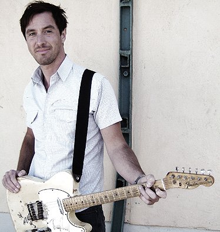
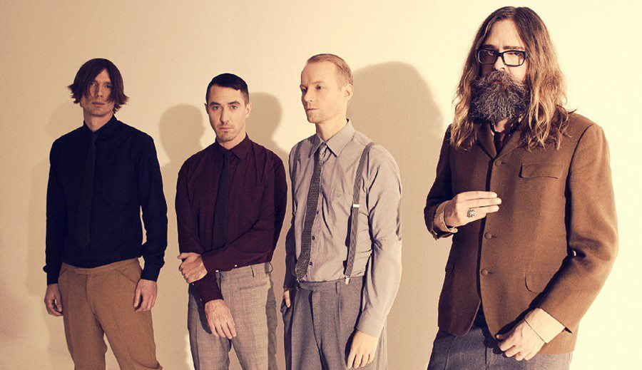

Kendt svensk band aflyser show pga. ulykke under egen koncert
Blev hentet med ambulance og hasteindlagt på hospitalet
Det svenske synthpop band The Amplifetes er i sorg
Henrik Jonback som er ét af fire bandmedlemmer i The Amplifetes har pådraget sig et hovedtraume: – Han måtte hastes på hospitalet midt i en af bandets koncerter i Stockholm. Henrik blev ramt af en rekvisit genstand under showet. Han gennemgår en del prøver lige nu og overvåges af specialister.
Den seneste nyhed er, at han er ved bevidsthed, men skal blive på hospitalet et stykke tid, skriver The Amplifetes på deres Facebook-profil. The Amplifetes aflyser nu de tre resterende koncerter på deres Europa-turné. The Amplifetes huskes af mange i Danmark for nummeret “ Blinded by the moonlight” fra 2011 som hittede verden over.
The Amplifetes udgiver ny single og afslører albumtitel og dato
The Amplifetes annoncerer nyt album, der bærer titlen Fastland
Det er fem år siden, The Amplifetes udgav albummet Where is the light. Fem år, hvor de har spillet et væld af koncerter, senest i Hamburgs berømte koncertsal Elbphilharmonien, som The Amplifetes solgte ud på lidt under to timer.
I dag udkommer albummets første single, nummeret "Fancy", hvor The Amplifetes har skiftet elguitaren ud med standart guitaren, hvilket går igen for flere af numrene på Fastland, hvor bandet har valgt en lidt anden tilgang til at arrangere og indspille deres sange end førhen. The Amplifetes turnérer i udlandet til efteråret, men det forventes, at de offentliggør danske koncertdatoer for 2020 sidst på sommeren.